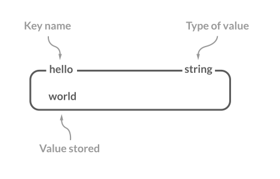
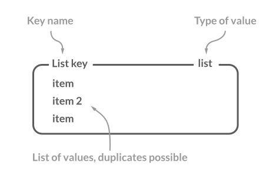

Redis
Redis是一个NoSQL数据库，开源（遵守BSD协议），使用ANSI C语言编写，Key-Value存储系统，基于内存运行，能够在大部分POSIX系统上运行。
1.Redis数据结构
1.String
Redis没有使用C语言的字符串去表示，而是自定义了SDS（简单动态字符串），允许存储字符串、整数、浮点数、图片、序列化对象。

| 命令 | 介绍 |
|---|---|
| SET key value | 设置指定 key 的值 |
| SETNX key value | 只有在 key 不存在时设置 key 的值 |
| GET key | 获取指定 key 的值 |
| MSET key1 value1 key2 value2 … | 设置一个或多个指定 key 的值 |
| MGET key1 key2 … | 获取一个或多个指定 key 的值 |
| STRLEN key | 返回 key 所储存的字符串值的长度 |
| INCR key | 将 key 中储存的数字值增一 |
| DECR key | 将 key 中储存的数字值减一 |
| EXISTS key | 判断指定 key 是否存在 |
| DEL key（通用） | 删除指定的 key |
| EXPIRE key seconds（通用） | 给指定 key 设置过期时间 |
2.List
Redis的List是一个双向链表，C语言本身没有实现链表，所以同样需要我们自己设计实现。
